Analysis of the Influence of Air Pollution and Other Factors on Human Health#
By Group 18: Peiying Guan, Yingyi Huang, Ye Joon Han, Michelle Fong
Introduction#
Mental illness is a widespread health challenge which is one of the leading causes of illness and disability around the world. A lot of studies showed that mental issues are complex and multi-causal.
In this project, we are going to examine the effects of various air pollutants(NO2, PM2.5, black carbon) on human mental health and wellbeing. In addition to air pollutants, we also want to see how other factors, including green space access and education level, affect people’s performance in Stroop test. A Stroop test measures a person’s cognitive function by assessing their attention capacity and processing abilities.
Note: Code used to create figures is located in the code folder.
Data#
Data Acquisition#
The dataset contains the data collected for the Barcelona epidemiological research study within the framework of the CitieS-Health project. Data were collected from September 2020 to March 2021 in Barcelona, Spain. It can be accessed through air pollution and mental health.
Data Cleaning#
The original data contains 3348 rows and 95 columns. By selecting some variable that we are interested in and removing rows with missing values, we reduced the data to 2221 rows and 16 columns. Since the data was collected in Spain, we need to translate some Spanish contents into English.
Exploratory Data Analysis and Interpretation of Plots#
Performance Over Time#
To examine and graph variables over time, we created a column called datetime, which combines year, month, and day into a pandas datetime object.
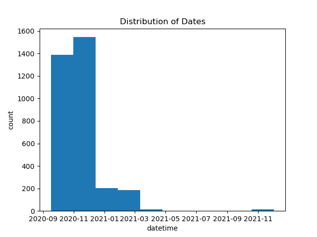
Examining the distribution of dates, we see that most entries are from September 2020 to December 2020, with the remaining entries mostly from January 2021 to March 2021.
Looking at the ID column, most individuals appear multiple times in the dataset. We took the 5 individuals with the most entries in the dataset and plotted their performance over time to see how performance generally varies per individual.
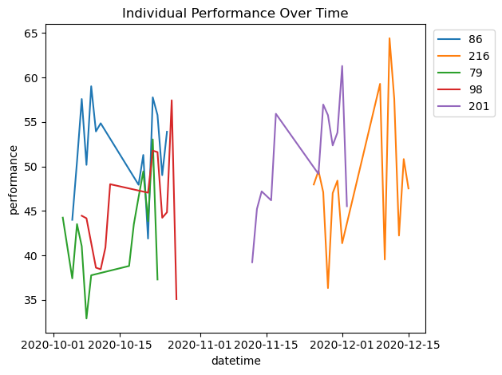
Plotting performance by individuals over time, we notice that individuals are recorded over different periods of time. Performance tends to moves up and down quite a bit for each individual. Next, we quantify how much performance tends to range for individuals.
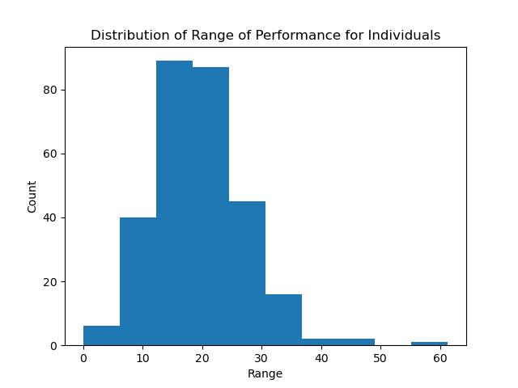
The graph above shows the distribution of the difference between the maximum and minimum performance score per individual - the range of performance range for individuals. The mean is around 20, which means that mental health performance does in fact range quite a bit for each individual on average.
Finally, we plot the mean performance for all individuals over time and compare this with the N02 levels over time, a measure of air quality, to examine whether they tend to have the same trends over time.
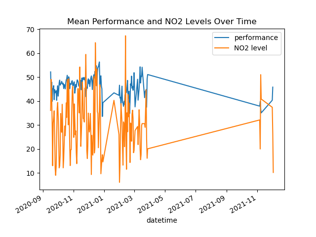
Plotting these two together, we see that it is possible that performance and pollution follow the same trends, but it is difficult to tell for sure with the ups and downs of both. This motivates further analysis of pollutants and environmental exposures in the next section.
Pollutants vs. Health#
We explored the pairwise relationships between environmental exposures(NO2, PM2.5, black carbon) and mental health measurement(stroop test performance, occurrence of mental issues, wellbeing, stress levels, sleep quality), but found no observable correlation among any pairs. 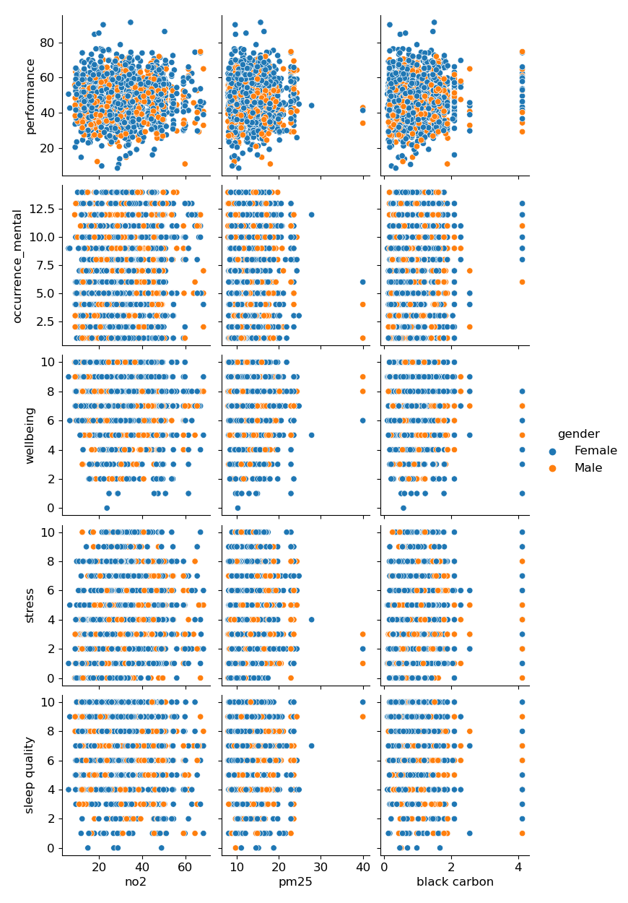
We noted that the dots in the top three plots were very cluster. To reduce the effect of overplotting, we created three plots that showed the contours of the kernel density estimate for stroop test performance and air pollutants. Grouping by gender, we found that the contours of main plots from male and female were similar. Therefore, we further expanded the conclusions we made in pairwise plots that there was no correlation between air pollutants and stroop test performance.
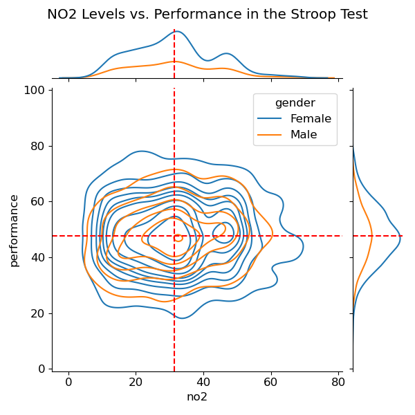 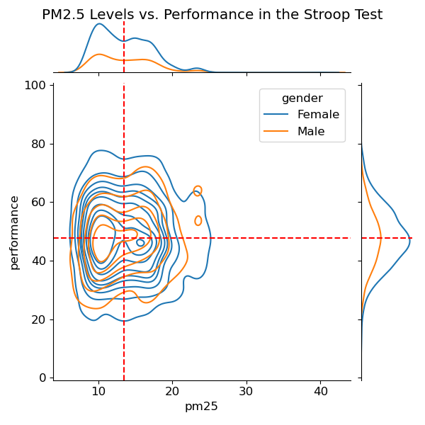 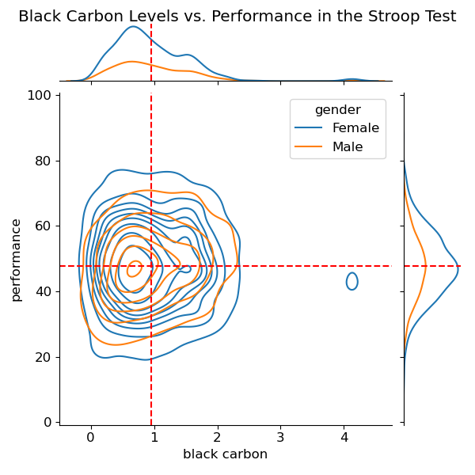
Relationship among Mental Health Test Performance, Stress, Mental Health Issue Occurrence, and Education Level#
We first investigated how do the histogram distributions of mental health test performance, stress, mental health issue occurrence look like based on education levels, including university, baccalaureate, and primary or less. We observed that the distributions of those features for all education levels are overlapping with one another.
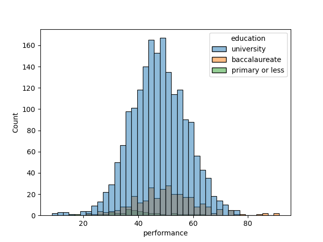 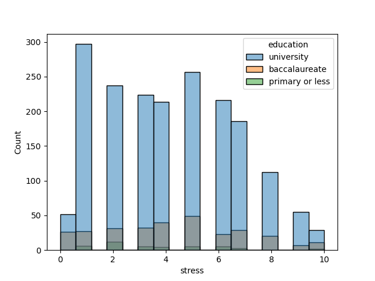 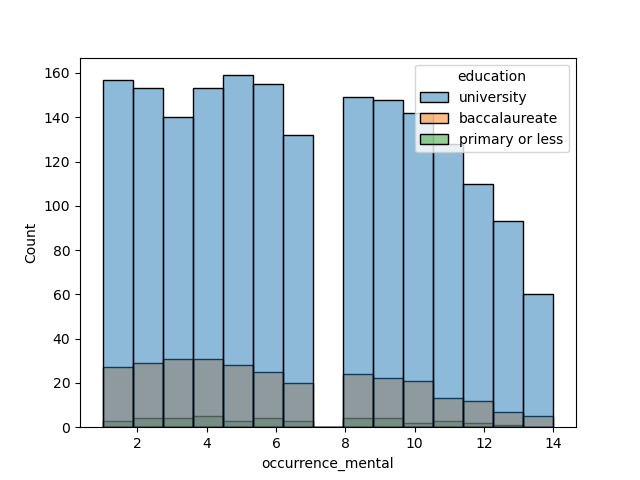
We also looked into the relationship between education and mental health test performance, education and stress, and education and occurrence of mental health issue through bar plots. We observed that the baccalaureate degree group has the highest stress level and performance on the test, and primary or less education group has the lowest stress level and performance on the test. We also observed that the university degree group have the largest number of occurrence of mental health issue.
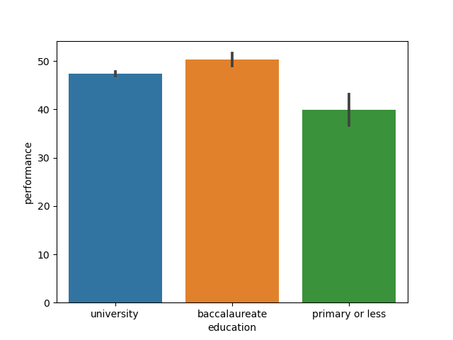 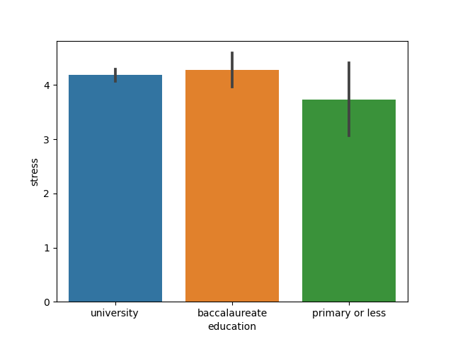 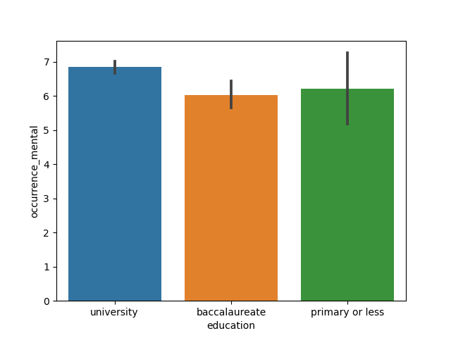
Moreover, we looked into the relationship among stress, mental health issue occurrence, and performance through scatter plot. We observed somewhat negative relationship between the stress and the performance on test, and somewhat positive relationship between occurrence of mental health issue and the performance, and the relationship does not seem to vary based on the education level.
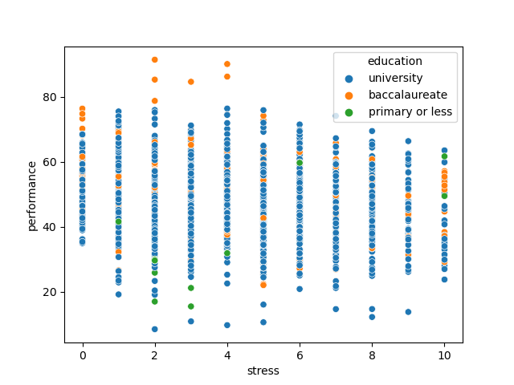 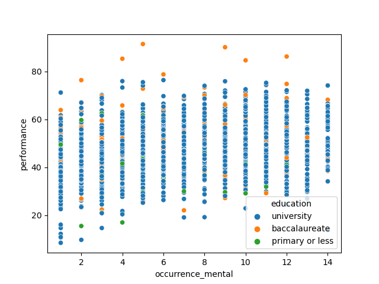
Based on the histogram distributions, we established a null hypothesis that states that there would be no difference in the average performance, average stress level, and average occurrence of mental health issue between people with university and people with baccalaureate, people with university and people with primary or less education background, and people with baccalaureate and people with primary or less education background, and alternative hypothesis is that there would be a difference. Since our null hypothesis assumes that education has nothing do with mental health, we decided to perform A/B testing because if the null hypothesis is true, the difference in average performance, stress level, and occurrence of mental health issue would be just 0 regardless of the education level. Using the 0.05 as a significance level, we were able to reject the null hypothesis that there is no difference in average occurrence of mental health issue between people with university degree and people with baccalaureate. However, we failed to reject the null hypotheses that there is no difference in average occurrence between people with university degree and people with primary or less education background, and also same for people with baccalaureate and people with primary or less education. We failed to reject the null hypotheses that there is no difference in average stress level for people with university, baccalaureate, and primary or less education. On the other hand, we rejected the null hypotheses that there is no difference in average performance for people with those education backgrounds.
Relationship among Mental Health conditions and acess to green spaces#
We then explore the relation between green space access with different health conditions (stress, sleep, outdoor time, etc). The pairplot is as below. 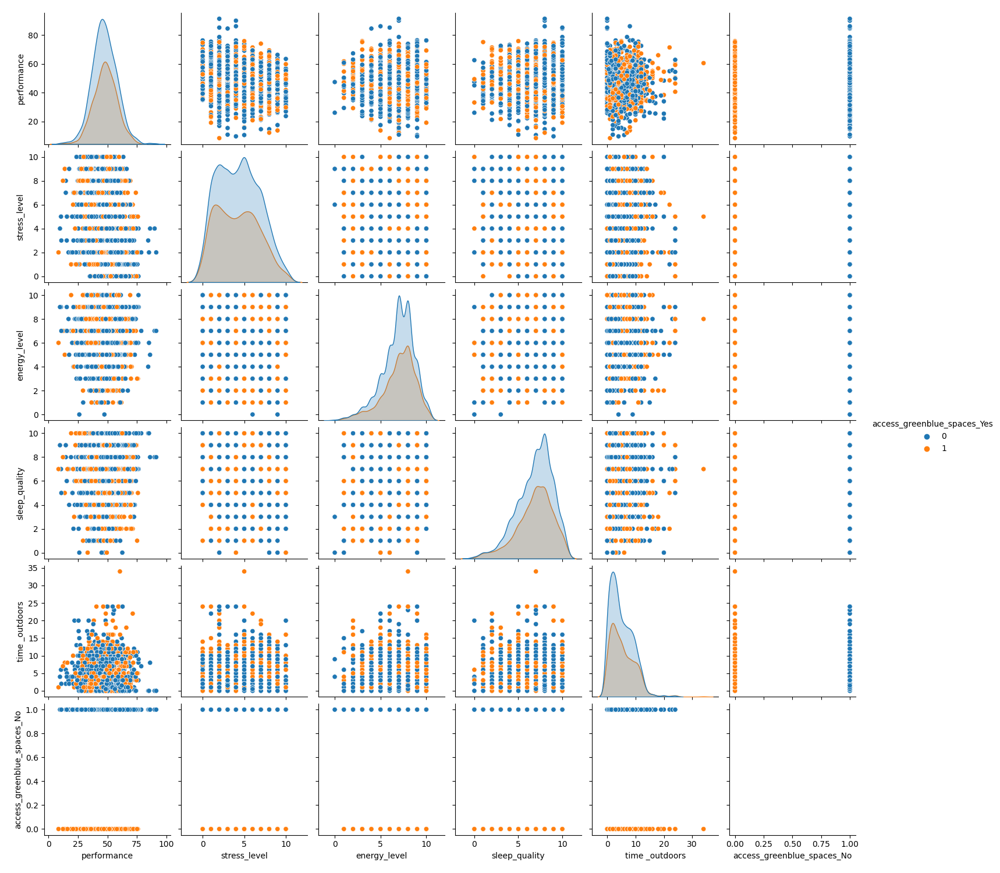
We could see that green space aceess doesn’t seem to have relationship with performance, tress_level, enery_level, sleep_quality, and outdoor time. We zoom in each and plot the density for different health conditions with different green space access.
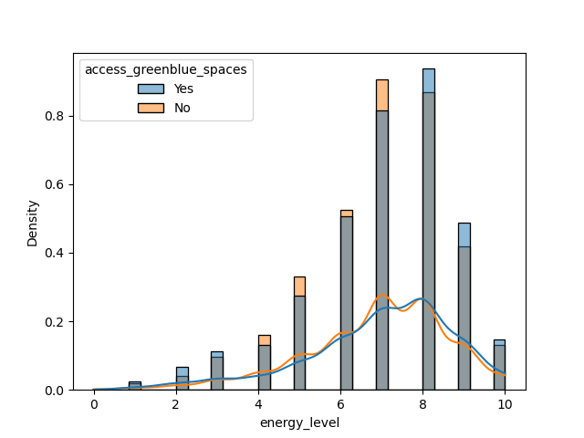 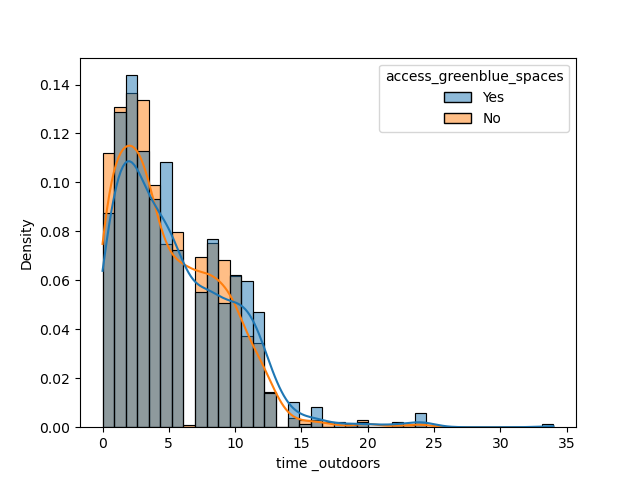 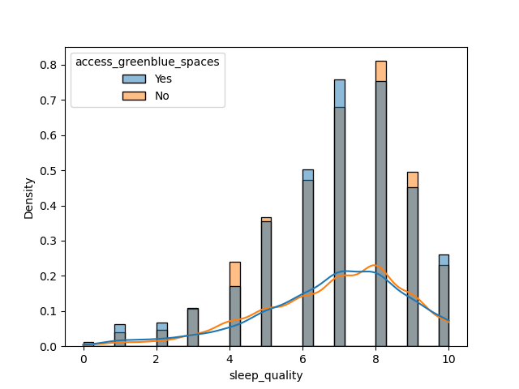 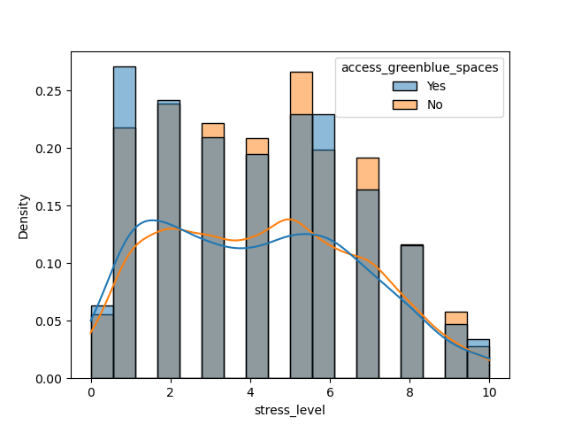
From the plots we see that health conditions don’t have relationship with green space access.
Conclusion#
Based on our exploratory analysis of air pollutants, education, and Stroop test performance, we found that there is no correlation between air pollutants and Stroop test performance and between mental health occurrences and education. There is some correlation between average performance and education background, and further work could explore this in more detail.